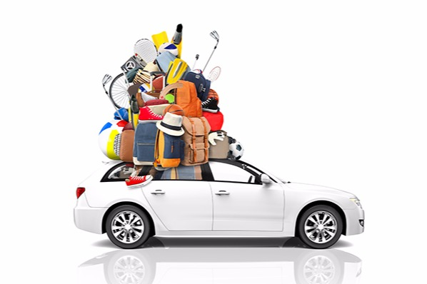
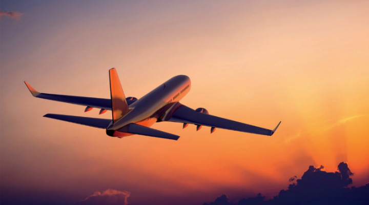

Ce alegem Avion sau Mașină?
 Am planificat vacanța, dar nu ne-am decis cu ce plecăm în vacanță? Hai să vedem, care sunt avantajele și dezavantajele fiecărui tip de transport!
Mai întîi de toate, ar fi bine să decizi ce e mai important pentru tine, călătoria cu aventuri sau destinația dorită?
Deja dacă ai un răspuns la aceste întrebări, o să înțelegi toate aspectele ce se ascund în alegerea ta.
Deci, mai jos incerc să descriu avantajele și dezavantajele acestor 2 tipuri de călătorie!
Care sunt avantajele unei călătorii cu mașina:
- Libertatea de a călători în timpul planificat și în propriul ritm de viată. Alegerile pe care le vei face ca drumet vor fi intotdeauna exact acelea pe care ti le doresti, de la ruta, la viteza, la opririle de pe parcurs si la mancarea pe care o vei manca. Nimic nu iti poate oferi mai multa libertate decat drumul larg deschis, alaturi de persoanele dragi.
- Surprize la tot pasul. O calatorie cu masina te va reînvăța cum e să fii surprins de ceea ce gasesti, începînd de la cîmpuri, și terminînd cu munți frumoși ce pot să se întindă pe parcursul călătoriei tale. Locurile și locurile pe care o să le vezi, înafară de acelea ce se regasesc printre obiectivele turistice îți aduce o satifacție nemaipomenită.
Care sunt dezavantajele unei călătorii cu mașina:
- Mai costisitor decât pare. Cu putina planificare in avans, biletele de avion pot fi mult mai ieftine decat un „road trip”, începînd de la taxa de drumuri pe care trebuie să o achiți și terminînd cu toate opririle pe parcurs: nopti de cazare, mese, suveniruri, si tot soiul de alte mici piedici ce pot aparea în cadrul calătoriei tale.
- Oboseala moarte n-are. Intr-un road trip este extrem de important sa existe mai mult decât un sofer, ideal ar fi că să conducă atît soțul, cît și soția, ca să fie posibilitatea de a se odihni pe parcursul călătoriei. O persoana franta de oboseala isi pierde simtul umorului si rabdarea, ba chiar ii poate molipsi si pe cei din jurul său. Este insa un risc constant in cazul calatoriilor de acest fel ca tot grupul sa devina din ce in ce mai obosit, iar pe calea de intoarcere, conversatia sa fie din ce in ce mai plata si cheful de viata din ce in ce mai epuizat.
 Avionul – îți oferă confort, timp, precizie și rapiditatea care și ii convinge pe multi să aleagaă avionul pentru o calatori.
Avantaje:
- Posibilitatea de a ajunge mult mai departe și în timp mult mai rapid, decât ai putea ajunge cu mașina. Dealtfel, unele dintre cele mai exotice si populare destinatii din lume sunt complet inaccesibile cu masina: Cuba, Insulele Maldive, Seychelles, Mauritius, Australia, etc. Avionul rezolva elegant aceasta problema. Dar chiar si in cazul unor destinatii ca India sau Thailanda, zborul este adeseori singura optiune accesibila, intrucat drumul pana acolo si inapoi cu masina ar dura luni de zile si ar costa mult mai mult decat un simplu bilet de avion.
- Era vitezei… si a confortului. Zece zile de inghesuire intr-o masina vor testa adeseori si cele mai solide prietenii. Avionul trece cu usurinta peste aceste probleme, scurtand enorm timpii de calatorie si oferind ceva mai mult confort, mai ales daca primesti cel putin o masa inclusa in bilet.
Dezavantaje:
- Din punctul A in punctul B… si atat. Ceea ce se castiga in confort, se pierde in aventura (asta doar daca nu consideri zborul insusi o mare aventura). Avionul este pragmatic – nu face decat sa te transporte. Romantismul zborului s-a pierdut incet-incet, pe cand al masinii si al drumului larg deschis pare sa castige teren an dupa an.
- O vacanta programata. Alegerea metodei de calatorie nu este importanta doar din pricina costurilor sau a confortului – ea dicteaza adeseori si tipul de vacanta de care te vei bucura. Eficienta avionului poate si sa restranga plaja de experiente pe care le poti avea in vacanta, fiindca te obliga sa ramai in aproximativ acelasi loc, sa programezi un traseu, un hotel, sa imparti timpul pentru obiective turistice si asa mai departe. Pentru unii, toate aceste planuri pot fi sufocante.
Evident, ambele variante de calatorie au puncte forte si puncte slabe. Ambele ofera doua tipuri diferite de libertate. Ramane doar sa alegi intre ele!
Tu ce preferi? Avionul sau masina? Si ce te determina sa alegi mai degraba una sau cealalta varianta? Lasa-ne un comentariu mai jos si spune-ne parerea ta!